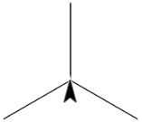
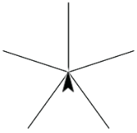
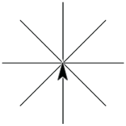
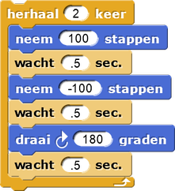
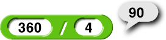
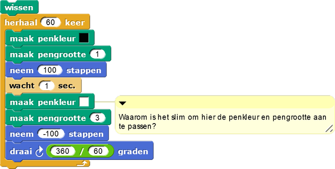

Hoeken en draaien
Op deze pagina leer je over het draaien van sprites; dat heb je nodig voor het maken van
veelhoeken. Om te beginnen ga je verschillende sterren tekenen, zoals deze:
  

Voer de vier experimenten in het project uit.- Nu kan je gaan spelen met het script hiernaast:
- Experimenteer met een rechte hoek (90 graden):
- Verander het
draaiblok door op de 180 te klikken en vervolgens 90 te typen. - Verander het aantal herhalingen (het getal dat je aan je
herhaalblok geeft) totdat de sprite dezelfde kant op wijst als toen hij startte.
- Verander het
- Experimenteer met een tiende van een hele draai (36 graden).
- Wat moet je in het
herhaalblok intypen om te zorgen dat de sprite dezelfde kant op wijst als toen hij startte?
- Wat moet je in het
- Probeer verschillende waardes voor het
neem-100stappenblok (bijvoorbeeld: -50, -10, of -90), en probeer de opdrachten (hierboven) opnieuw. Verandert deze verandering de waardes die je nodig hebt voor hetherhaalblok? - Probeer om het tweede
neem .. stappenblok te verwijderen (rechtermuisknop of control-klik en daarna op 'delete' klikken). Probeer een paar van de experimenten opnieuw uit.
- Experimenteer met een rechte hoek (90 graden):
-
 Praat met je buur en beschrijf wat je hebt geleerd over hoeken en draaien.
Praat met je buur en beschrijf wat je hebt geleerd over hoeken en draaien.
Functies voor draaien
- Een 360° draai is een hele draai, de helft daarvan (180°) is een halve draai. Een vierde van 360°, , is een kwartslag.
- Maar je hoeft de berekening niet zelf te doen. Snap! kan deze berekening voor je uitvoeren met blokken uit het groene Functies-palet.
- Je kan of gebruiken om een zevende van een draai of een derde van een draai te krijgen.
Voer script A uit en experimenteer:- Verander de waardes van het script A om een ster te tekenen met achtereenvolgens 5, 8 en 3 lijnen.
- Maak een kopie van het ster-script dat je gemaakt hebt (rechtermuisknop of control-klik
het script en kies "kopieer").
- Verwijder vervolgens het
neem-100stappenblok. - Wat doet je nieuwe script?
- Verwijder vervolgens het
- Maak nog een kopie van het originele script, doe daarna het volgende:
- Verander het in een script met vier lijnen.
- Verwijder opnieuw het
beweeg-100stappenblok. - Wat doet je nieuwe script?
- Bekijk script B in het document dat je bij 4. geladen hebt. Het laat zien hoe je een script maakt dat zestig
lijnen tekent en zich gedraagt als de grote wijzer van een klok. Probeer het eens.
Bespreek samen hoe script B werkt, zodat je alle details begrijpt.
- Waarom is het slim om in dit script de penkleur en pengrootte aan te passen? 